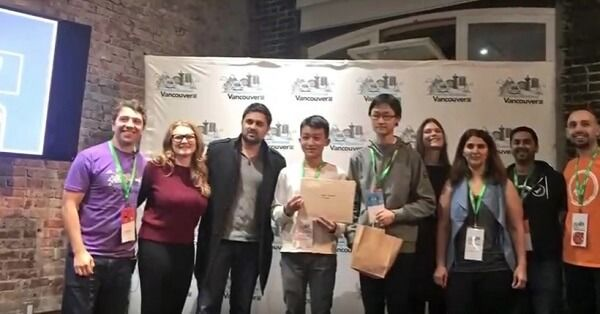

Programming Contests
I am a decently good competitive programmer and have been involved in Berkeley's ACM ICPC teams.
- My Codeforces handle is Doriath and I have been in division 1 (reached orange) since last year
- I was in the Berkeley Radicals team last year which solved 10 problems in the Pacific NW regionals and placed 7th. This year I am tentatively a member of the Berkeley Blue team.
- I won a T-shirt from the Facebook Hacker Cup this year by placing in the top 3%-ish
- In high school, I came in the top 20 in the Canadian Computing Competition and was invited to the Canadian Computing Olympiad (CCO) where I received the bronze medal. I was also in the platinum division of USACO.
Miscellaneous Contests/Other stuff
- I won the CS 61A Hog Contest in Fall 2017. Later I converted the infrastructure I built for winning the contest into a system to display a live scoreboard for the contest.
- I won the Fall 2018 CS 170 Final Competition, related to graph partitioning.
- I placed first at Startup Weekend Vancouver 2016, along with my two team members: Berkeley MET student Luofei Chen and Mr. Shinloong Leong from Singapore. While I don't really participate in startup competitions etc. anymore, it was a very interesting experience. 
- In EE 126, my final project group built a program to transmit text over sound between two computers (this was one of the project options). I was able to get it to achieve a 200 bits-per-minute transmission rate with good robustness using frequeuency modulation, Reed-Solomon and Huffman coding. We were deemed to be the best project group and were given the opportunity to present to the class.